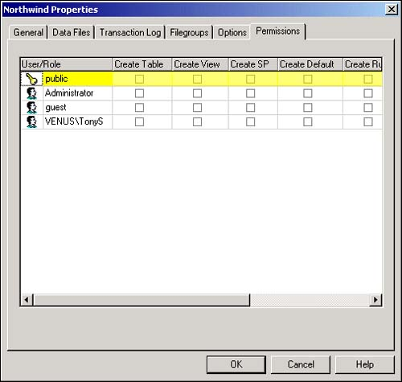

SQL Server databases can become quite large and complex. It is important to control the number and type of objects that are added to a SQL Server database so that its structure contains only those objects that are actually required for the database's operation.
If object creation were not controlled, users could build temporary tables, views, stored procedures, and other database objects that would become permanent additions to the database. There's no easy way to tell whether a particular database object is required by some front-end applications, making it difficult to remove these objects.
I want to control unwanted and unneeded object proliferation in my databases. Without some kind of control, users might unnecessarily complicate the database's structure by adding unwarranted objects.
You will employ statement permissions to permit or disallow users to execute SQL statements that modify the database structure. There are also statement permissions controlling SQL statements that back up the database and its log file. These statements include the following:
CREATE DATABASE. Creates a new database (applicable only in the master database).
CREATE DEFAULT. Establishes default values for columns in tables.
CREATE FUNCTION. Creates a user-defined function that is saved as a Transact-SQL routine.
CREATE PROCEDURE. Creates a stored procedure.
CREATE RULE. Adds a rule to a column in a table. A rule specifies the acceptable values for the column.
CREATE TABLE. Creates a new table within the database.
CREATE VIEW. Adds a view to the database.
BACKUP DATABASE. Backs up the entire database to removable media.
BACKUP LOG. Backs up the database's log file to removable media.
Although this security task has been discussed only from the perspective of limiting the user's ability to create database objects, statement permissions are also a way to ensure that users who really need to modify the database structure are able to do so.
Statement permissions are applied at the database level. There are no global SQL Server statement permissions.
Logging in to SQL Server does not mean that a user is actually able to access and use the data and other objects that are stored in SQL Server. Each user account has certain permissions assigned to it that specify the account's ability to use the database and its objects.
Statement permissions are one category of database permissions. Statement permissions specify which types of SQL DDL (data definition language) statements a user is allowed to execute against the database. DLL statements are frequently used to create and modify tables, add indexes to tables, and perform other data structure operations on the database. Statement permissions limit a user's ability to perform operations that could be dangerous to the database.
After statement permissions have been established, the user is able to execute object creation statements (such as CREATE TABLE) only if the statements permission has been granted.
By default, SQL Server does not grant statement permissions. As the SQL Server system administrator, you should grant these permissions only to users who require object creation ability.
Open Enterprise Manager and expand the Northwind database's icon.
Right-click on the Northwind database's icon and select Properties from the shortcut menu. This action opens the database's Properties dialog box (see Figure 11.16).

Click on the Permissions tab. Notice that the leftmost column contains the roles and logins that you have created within the database. Select a role or login, and check the statement permissions you want to assign.
Each statement permission has three different states:
Revoke. The user is not given the statement permission unless he is a member of a role that has been given the permission. The graphic to depict this state is blank.
Grant. The user is given permission to run the statement. The graphic to depict this state is the check.
Deny. The user is denied the statement permission and cannot run the SQL Statement. The red X depicts this state.
Statement permissions are a great way to permit assistants the ability to add tables, views, stored procedures, and other objects as needed. Because the default setting is to deny these permissions, you do not have to worry about unwarranted object proliferation in your databases.